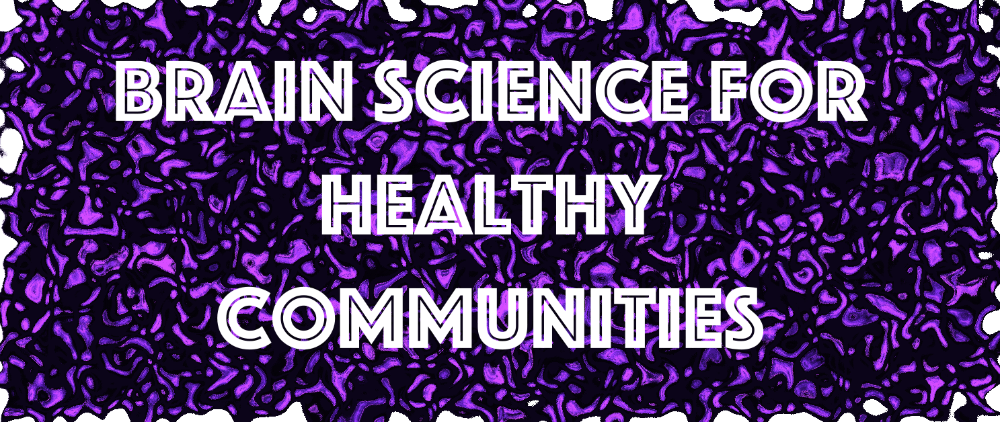

Mapping young brains to reveal the biology of playing, learning and growing in the city
The Community Life & Adolescent Development Study is an extension of The Adolescent Development Study (ADS), a 6-year project (2011-2017) funded by the National Institutes of Alcohol Abuse & Alcoholism and Drug Abuse.
Magnetic Resonance Imaging (MRI) at the Georgetown University Medical Center was used in ADS to take pictures of the growing brain along with interviews to assess social adversity, drug-use, family cohesion and lifestyle from ages 11-17 in 142 youth living in the DC, Maryland and Virginia area.
The Community Life and Adolescent Development Study extends ADS to investigate the relationship between community health, the maturation of young people’s brains and future life outcomes, specifically in the context of experiences with violence in schools and communities.
Participate to Educate!
We are seeking families with youth ages 12-18 living in Washington, D.C. communities to participate in our study and help us develop materials for understanding how community and family life can influence the teenage brain for adulthood.
Brain Science for Healthy Communities
Mapping young brains to reveal the biology of playing, learning and growing in the city
The Community Life & Adolescent Development Study is an extension of The Adolescent Development Study (ADS), a 6-year project (2011-2017) funded by the National Institutes of Alcohol Abuse & Alcoholism and Drug Abuse.
Magnetic Resonance Imaging (MRI) at the Georgetown University Medical Center was used in ADS to take pictures of the growing brain along with interviews to assess social adversity, drug-use, family cohesion and lifestyle from ages 11 to 17 in 142 youth living in the DC, Maryland And Virginia area.
The Community Life and Adolescent Development Study extends ADS to investigate the relationship between community health, the maturation of young people’s brains and future life outcomes, specifically in the context of experiences with violence in schools and communities.
>>>>>>> refs/remotes/github/synced/masterWho is funding this study?
This project is funded by a research dissertation grant from the National Institute of Justice (NIJ) under the Office of Justice Programs (OJP) and is being performed at the Georgetown University Medical Center.
What are the long term goals of the study?
As part of our commitment to the NIJ, we aim to develop materials for counselors, teachers and parents to help identify the needs of youths growing up in urban environments. We need the participation of urban families to generate and validate these materials.
<<<<<<< HEAD =======Participate to Educate!
We are seeking families with youth ages 12-18 living in Washington, D.C. communities to participate in our study. Your participation in this study is voluntary and confidential. No information you provide will be available to any person other than the research staff.
>>>>>>> refs/remotes/github/synced/master